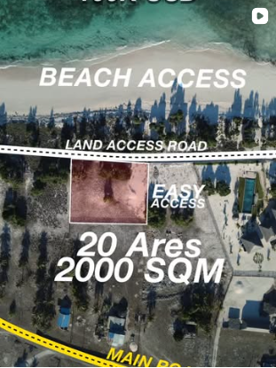

01 / Rote beachfront landMake the site
easy to read.
Meta Pacific / 30 January 2026
- Keep
- The real site overview, plot outline and access markers. They answer practical questions about the land.
- Refine
- Separate the opening hook from the specification frame. Avoid making the area, road and beach labels compete at the same size.
- Apply
- Open with “Beachfront. With a way in.” Follow with one annotation at a time: plot, road, beach. Put current terms on a separate, checked information slide.